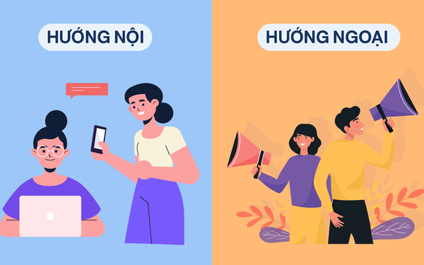

Ming Phạm
Đừng làm một introvert toàn thời gian!
Như các bạn đã đọc ở tiêu đề, bài viết này tôi xin phép đi thẳng vào vấn đề: Đừng chọn trở thành một người hướng nội toàn thời gian!
Tôi đã từng là một người hướng nội và tôi biết được tất cả những sự thiệt thòi mà một introvert sẽ phải gánh chịu. Vì thế tôi cho rằng mình có đủ kinh nghiệm cũng như sức nặng để chia sẽ bài viết lần này, hướng đến những người đã và đang làm một introvert “toàn phần”.

Những khó khăn mà một người hướng nội sẽ chịu đựng là rất lớn. Trước đây tôi đã từng là một hình chữ nhật không có gì đặc biệt, sống thu mình an toàn như chính khối hình đó vậy. Tôi dám chắc- tuy có hơi động chạm- nhưng nguyên nhân khiển tôi như vây chính là vì lao đầu vào trò chơi điện tử, nếu không muốn nói là nghiện game. Tất nhiên đó chỉ là một trong số ít nguyên nhân, có thể lí do của bạn không giống tôi, nhưng tất cả sẽ chỉ là sự biện mình cho việc trở thành một introvert. Chắc chắn các bạn đã từng trải nghiệm cảm giác ngại giao tiếp, không biết nói gì ngay cả khi đang trò chuyện với những người bạn của mình; cảm thấy lời nói của mình không có sức nặng;.... Chưa dừng lại ở đó, một introvert cũng sẽ khó có thể nhận được sự tôn trọng của mọi người do bạn không thể hiện khả năng của mình ra. Nếu bạn tự hỏi tại sao trên blog không có những bức ảnh thời học sinh của tôi thì là do lúc đó tôi là một introvert và tôi còn không dám tạo dáng trước máy ảnh chứ đừng nói là lưu lại những bức hình đó và đăng lên mạng.
Vậy tại sao các bạn lại muốn mình vô hình trên thế giới này đầy màu sắc này? Tôi tin rằng rất nhiều bạn đọc muốn trở nên hướng ngoại hơn nhưng không biết bắt đầu từ đâu, vậy nên tôi xin chia sẽ một số giải pháp mà bản thân tôi đã thực hiện để có thể cởi mở hơn như ngày hôm nay.
Giải pháp hiệu quả nhất cho vấn đề này đó là bạn hãy tự đưa bản thân vào tình huống buộc phải giao tiếp với mọi người. Ở đây tôi gợi ý bạn hãy tìm cho mình một môn thể thao để chơi, nếu là thể thao đồng đội thì càng tốt. Khi tôi bắt đầu chơi bóng rổ, rõ ràng là tôi sẽ cần có sân bãi để chơi, và đó cũng chính là nơi giúp tôi dần dần bước ra khỏi vùng an toàn, bắt đầu học cách giao tiếp. Khi đó tôi mới nhận ra thực sự việc nói chuyện với người khác là quá đơn giản mà sao trước đây điều đó lại khó đến vậy. Giờ đây, cứ như một mũi tên trúng hai đích, tôi vừa tự tin hơn về bản thân, vừa trở thành một cầu thủ có tiếng tại ngôi trường cấp 3 của mình.
Một trận đấu bóng rổ ở trường của tôi
Bên cạnh đó, tôi cũng đã tự học trượt ván. Trong suốt thời gian mới bắt đầu, mọi người ở công viên chỉ bảo rất nhiệt tình mà không hề chê cười một đứa “newbie” như tôi, từ đó tôi cũng nhận ra nếu bạn không giỏi ở việc gì đó, thì đó không phải là điều tệ nhất, quan trọng là bạn có ý chí tiến lên hay không.

Một bức ảnh tôi trượt ván
Có lẽ nếu cứ ru rú trong nhà như trước đây, tôi đã không thể ngộ ra những điều này. Thực sự chơi thể thao là một điều đã thay đổi cuộc sống của tôi, giúp tôi có nhiều sức khỏe hơn và cũng cho tôi rất nhiều mối quan hệ tốt đẹp.
Một gợi ý khác cho các bạn đó là hãy học thêm các kĩ năng khác, bởi vì với một lượng kiến thức đầy đủ, bạn có thể tự tin hơn trong việc tranh luận với mọi người về các lĩnh vực khác nhau trong cuộc sống. Trong thời kì tự mài giũa bản thân từ một hình chữ nhật xấu xí thành một hình vuông có thể nói là hoàn hảo hơn, tôi đã tự học rất nhiều các lĩnh vực khác nhau. Với việc học các phần mềm đồ họa như Premiere Pro, Photoshop và Illustrator, tôi vừa có một bước đệm vững chắc cho chuyên ngành của mình, vừa có thêm kiến thức để tự tin trao đổi đối tác và thi thoảng làm một số bức ảnh hay clip vui nhộn cho những người bạn của mình.

Một project Premiere Pro của tôi

Một project Illustrator của tôi
Ngoài ra, tôi còn tự học thêm một số lĩnh vực khác như thanh nhạc, nấu ăn, dinh dưỡng,… Với việc có thể nói chuyện về rất nhiều khía cạnh trong cuộc sống, tôi đã trở nên thân thiện và cởi mở hơn, do đó cũng nhận được rất nhiều tình cảm của mọi người, đặc biệt là tình cảm của các bạn đọc đây. Có thể nói hành trình trưởng thanh của tôi bắt đầu từ một hình chữ nhật giản đơn, tự mài giũa để trở thành một hình chữ nhật hoàn hảo, còn gọi là hình vuông. Hình vuông đó đã tự nhân lên, biến mình thành một khối lập phương nhiều mặt, cũng như tôi giờ đây đã trở nên tự tin, đa chiều, hiểu biết hơn rất nhiều.
Tuy nhiên, tại sao tôi lại nói “đừng làm một introvert ‘toàn thời gian’”? Điều đó có nghĩa rằng chọn cho mình làm một người hướng nội không phải lúc nào cũng mang lại thiệt thòi. Khi bạn muốn hoàn thành một công việc thật tốt, thu mình lại là phương án hữu hiệu hơn. Đó là khi bạn sẽ tập trung tuyệt đối, không bị những mối bận tâm xung quanh làm phiền, nhờ đó mà hiệu quả làm việc sẽ cao hơn. Hoặc là khi bạn nhiều tâm tư, stress vì công việc,…. thì hướng nội một chút cũng không sao. Đôi khi tôi cảm thấy mệt mỏi với cuộc sống, tôi có thể hoàn toàn biến mất khỏi mạng xã hội vài ngày và dành thời gian cho bản thân, có thể là xem một series phim, chơi một vài ván game hay tập thể dục.
Nói tóm lại, bạn không cần phải hoàn toàn trở thành một người hướng ngoại, tuy nhiên hãy biết cách thu mình lại đúng lúc và cởi mở hơn khi cần thiết. Hoán đổi giữa việc làm một introvert và một extrovert sẽ mang lại cho bạn một cuộc sống thú vị hơn rất nhiều đấy!